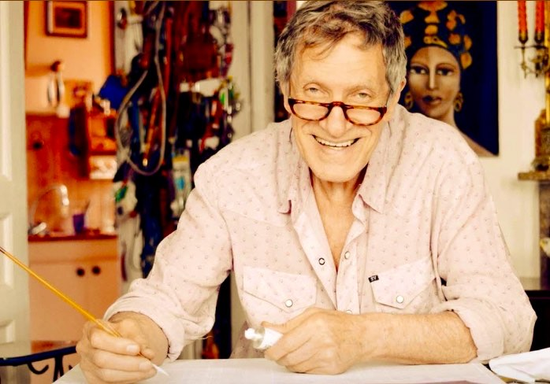

Portrait de l’artiste
Robert KOHN
Robert KOHN âgé de 23 ans part à bord du paquebot France visiter l’Amérique, il traverse les Etats Unis en bus et parcourt les 6000Km qui séparent New York de Los Angeles. Il s’imprègne des couleurs des villes, villages et des maisons, sans savoir que cette aventure allait le guider et influencer son style un jour. Il s’est également inspiré de sa vie Parisienne.
La joie de vivre, le monde hippie, et les images hautes en couleurs véhiculées par cette période se retrouvent dans ses peintures d’aujourd’hui. Ses amitiés avec Jim Morrison, le groupe Jefferson Airplane, Jimmy Hendrix, les chaussettes noir et bien d’autres ont contribué au devenir de l’artiste Pop Art.
Il entrouvre l’imaginaire dans un monde de gaité qui d’une apparente simplicité est d’une grande complexité, la couleur est sa raison de vivre par ses mélanges si vifs et harmonieux ; sur certaines de ses œuvres, plus de 112 couleurs se côtoient.
Ses peintures veulent faire oublier la grisaille quotidienne qui nous entoure et apportent à ceux qui les regardent un sentiment de bonheur et de gaieté. L’humour, la fantaisie sont présents dans les scènes et les personnages qu’il a peints. Les titres de ses œuvres sont également à l’image de l’artiste, cash et sans filtre.
Les femmes ont toujours été très présentes dans sa vie, elles y ont occupé une place importante. C’est naturellement qu’elles apparaissent dans beaucoup de ses œuvres.
Stéphane KOHN